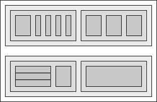

| [ << La gravure musicale ] | [Racine][Table des matières][Index][ ? ] | [ Références bibliographiques >> ] | ||
| [ < Règles de formatage ] | [ Plus haut: La gravure musicale ] | [ Représentation de la musique > ] | ||
1.4 De la théorie à la pratique
Nous allons nous intéresser, dans les paragraphes qui suivent, aux arbitrages en terme de programmation qui ont participé à l’élaboration de LilyPond.
| Représentation de la musique | le format de saisie | |
| Les constituants de la gravure | quels symboles graver | |
| Flexibilité architecturale |
Représentation de la musique
Le format de saisie idéal pour un système évolué de formatage consiste en la description abstraite du contenu. Dans le cas qui nous occupe, il s’agit tout bonnement de la musique. Cela n’est pas sans poser un énorme problème : comment définir ce qu’est la musique ? Pour résoudre ce problème, nous l’avons inversé. Au lieu de définir ce qu’est la musique, notre programme sert de définition : nous avons écrit un programme capable de produire des partitions, et avons ajusté son format de saisie pour être aussi léger que possible. Lorsque le format ne peut plus être simplifié, nous avons par définition atteint le contenu même. Autrement dit, notre programme utilise la définition formelle d’un document musical.
La syntaxe est également celle de l’interface utilisateur de LilyPond, puisqu’elle peut être facilement tapée au clavier :
{
c'4 d'8
}
sont un do médium noire et un ré croche juste au-dessus.
![[image of music]](../7f/lily-00c5b815.png)
À petite échelle, une telle syntaxe est pratique. À plus grande échelle, une structuration est nécessaire. Sans cela, comment saisir des pièces aussi complexes qu’un opéra ou une symphonie ? La structure est construite selon le même concept que les expressions musicales : c’est en combinant de petits fragments qu’une musique plus complexe peut être représentée. Par exemple :
f'4
![[image of music]](../5d/lily-fb3d5810.png)
Quand des notes sont combinées simultanément, il suffit de les insérer
entre << et >> :
<<c4 d4 e4>>
![[image of music]](../75/lily-41f9d8ad.png)
Insérées dans une paire d’accolades { … }, ces
expressions sont intégrées dans une séquence :
{ f4 <<c4 d4 e4>> }
![[image of music]](../c5/lily-e20e6528.png)
Ceci constitue une nouvelle expression, qui peut être à son tour
combinée avec une autre expression simultanée (en l’occurrence une
blanche) à l’aide de <<, \\ et >> :
<< g2 \\ { f4 <<c4 d4 e4>> } >>
![[image of music]](../8a/lily-c40cca54.png)
De telles structures récursives peuvent être définies formellement et de manière ordonnée avec une grammaire libre de tout contexte. Le code d’analyse de la saisie est également généré depuis cette grammaire. Autrement dit, la définition de la syntaxe de LilyPond est claire et sans ambiguïté.
Ce sont la syntaxe et l’interface qui concernent les utilisateurs. Elles sont sujettes à discussion, puisque relatives aux goûts de chacun. Bien que ces discussions soient intéressantes, elles ne sont pas productives. À l’échelle de LilyPond, l’importance du format de saisie est minime : inventer une syntaxe claire est bien plus aisé qu’écrire un code de mise en page décent. Ceci est d’ailleurs illustré par le nombre de lignes de code de ces composants respectifs : l’analyse du texte de saisie et sa représentation pèsent moins de 10 % du code.
Dans la conception des structures utilisées par LilyPond, nous avons pris certaines options divergentes des autres logiciels. Considérons la nature par essence hiérarchique de la notation musicale :
![[image of music]](../69/lily-53ea49fe.png)
Nous y voyons des hauteurs regroupées en accords appartenant à des mesures elles-mêmes rattachées à des portées. On pourrait représenter cela par un système de boîtes imbriquées :

Cette structure est cependant réductrice car reposant sur des postulats extrêmement restrictifs. Cela devient plus évident dès lors que la musique se complique :
![[image of music]](../c6/lily-d309cd80.png)
Ici, les portées débutent et s’arrêtent n’importe où, les voix passent d’une portée à l’autre, et parfois même occupent deux portées. Nombre de logiciels auront d’énormes difficultés à reproduire cet exemple, pour la bonne et simple raison qu’ils se basent sur le modèle hiérarchique de boîtes imbriquées. LilyPond, quant à lui, tend à préserver la dichotomie entre le format de saisie et une structure aussi flexible que possible.
Les constituants de la gravure
Si le processus de formatage se charge de décider où positionner les symboles, encore faudrait-il savoir quels symboles doivent apparaître – ou bien, quelle notation utiliser.
La notation musicale constitue une forme d’enregistrement de la musique qui a d’ailleurs évolué sur un millier d’années. La forme que nous utilisons de nos jours remonte au début de la Renaissance. Bien que ses fondements n’aient pas changé – des têtes de note réparties sur une portée à cinq lignes –, certains détails sont apparus qui permettent de rendre compte des apports de la notation contemporaine. La notation musicale couvre cinq siècles de musique, allant de la simple monodie à de gigantesques contrepoints orchestraux.
Comment intégrer un tel monstre aux si nombreux visages ? Notre solution est de clairement distinguer la notation – quels symboles utiliser – de la gravure – où les placer. Pour appréhender la notation, nous l’avons disséquée en éléments simples (et programmables) : chaque type de symbole est géré par un module – ou greffon – différent. Tous ces modules sont entièrement configurables et indépendants, chacun pouvant être développé et amélioré séparément. Nous appelons ces modules des graveurs (engravers en anglais), par analogie avec ces professionnels qui mettent en forme graphiquement les idées musicales.
Le module le plus basique, qu’on appelle Note_heads_engraver,
crée les têtes de notes :
![[image of music]](../1e/lily-84b06b5e.png)
Puis le module Staff_symbol_engraver génère les objets
représentant les lignes de portée :
![[image of music]](../d2/lily-eee21123.png)
le module Clef_engraver fournit au Note_heads_engraver
la hauteur à laquelle doit être placée chaque tête de note :
![[image of music]](../c4/lily-201207c4.png)
et, enfin, les hampes et leurs crochets sont gérés par le
Stem_engraver :
![[image of music]](../35/lily-cf2ad001.png)
Le module Stem_engraver est appelé dès qu’une tête de note
apparaît. Pour chaque note rencontrée – ou groupe de notes s’il s’agit
d’un accord –, un objet hampe est créé et attaché à la tête de note.
Si l’on ajoute les modules en charge des ligatures, des liaisons, des
accents, des barres de mesure, de la métrique et de l’armure, nous avons
tout ce qui est nécessaire à une partition.
Le principe décrit plus haut fonctionne très bien pour de la musique monophonique, mais qu’en est-il de la polyphonie ? Dans ce cas, plusieurs voix peuvent partager la même portée :
![[image of music]](../95/lily-a873bdd4.png)
Ici, la portée et les altérations sont partagées mais les hampes, liaisons, liens, etc. dépendent de chaque voix. De plus, les graveurs doivent être regroupés. Les graveurs de têtes de note, hampes, liaisons, etc. sont donc inclus dans un groupe appelé Voice context (contexte de voix), alors que l’armure, les altérations, les barres de mesures, etc. sont placées dans un groupe Staff context (contexte de portée). Dans le cas d’une polyphonie, un contexte de portée contient plusieurs contextes de voix. De même, plusieurs contextes de portée peuvent être assemblés dans un contexte de partition (Score context) :
![[image of music]](../ba/lily-d2d5c2cf.png)
Voir aussi
Référence des propriétés internes : Contexts.
Flexibilité architecturale
Pour ses premiers pas, LilyPond était totalement écrit en langage C++ ; les programmeurs gravaient les fonctionnalités du programme dans le marbre. Cela s’est avéré peu satisfaisant pour plusieurs raisons :
- Il peut arriver que LilyPond commette une erreur, auquel cas l’utilisateur doit pouvoir déroger aux décisions arbitraires, et donc se servir du moteur de formatage. Par conséquent, les règles et paramètres ne peuvent être fixés lors de la compilation, mais doivent être accessibles lors de l’exécution.
- Graver est une affaire de jugement visuel, donc une affaire de goût. Nous savons que les utilisateurs peuvent ne pas être d’accord avec nous. Il faut donc qu’il aient accès aux définitions des styles typographiques.
- Enfin, nous redéfinissons continuellement les règles de formatage, et avons donc besoin d’une approche souple des règles. Le C++ implique une méthode de groupement des règles qui ne correspond pas au fonctionnement de la notation musicale.
Nous avons résolu ces problème par l’adjonction d’un interpréteur pour le Scheme et la réécriture de parties entières de LilyPond dans ce langage. L’architecture du programme repose sur la notion d’objets graphiques que l’on peut décrire par des variables ou des fonctions Scheme. Elle doit prendre en compte les règles de formatage, le style typographique et les décisions de formatage individuelles. L’utilisateur de LilyPond peut accéder directement à la majorité de ces contrôles.
La mise en page dépend des variables Scheme. Par exemple, la variable direction définie pour de nombreux objets, encode le choix entre haut et bas (ou gauche et droite). L’image qui suit présente deux accords, accentués et arpégés. Pour le premier accord, la direction de chaque objet est vers le bas (ou la gauche). Les objets sont dirigés vers le haut (ou la droite) pour le second.
![[image of music]](../80/lily-ee8b9274.png)
Le processus de mise en forme d’une partition consiste à lire et écrire des variables d’objets. Certaines variables ont une valeur prédéfinie. Par exemple, l’épaisseur de nombreuses lignes – caractéristiques d’un style typographique – est préétablie. La changer entraîne un changement du style typographique.
![[image of music]](../61/lily-f9243c39.png)
Les valeurs prédéfinies de certaines variables font aussi partie des règles de formatage. Chaque objet possède des variables contenant des procédures. Ces procédures réalisent le formatage prédéfini, dont l’apparence peut être changée en remplaçant ces procédures par d’autres. Dans l’exemple suivant, la règle permettant à l’objet « tête de note » de dessiner son symbole est modifiée au cours de l’extrait musical :
![[image of music]](../8b/lily-94984831.png)
Autres langues : English, deutsch, español, magyar, italiano.
About automatic language selection.